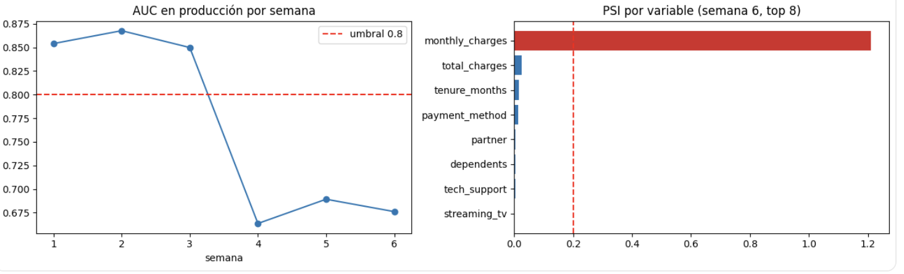
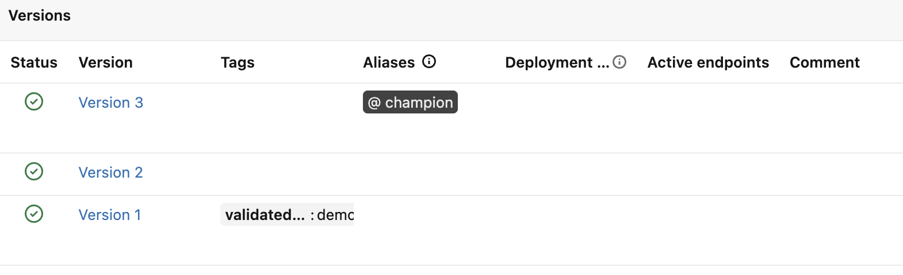
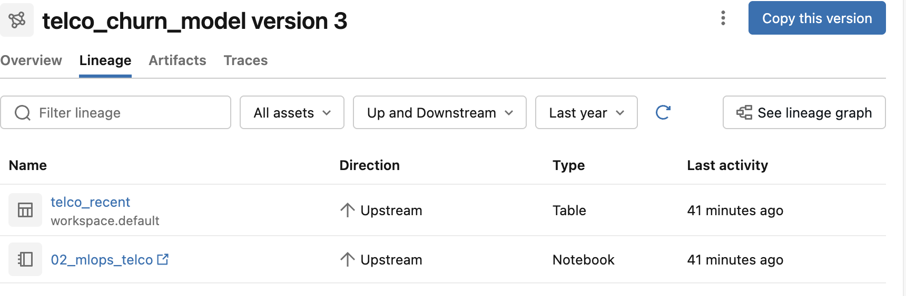
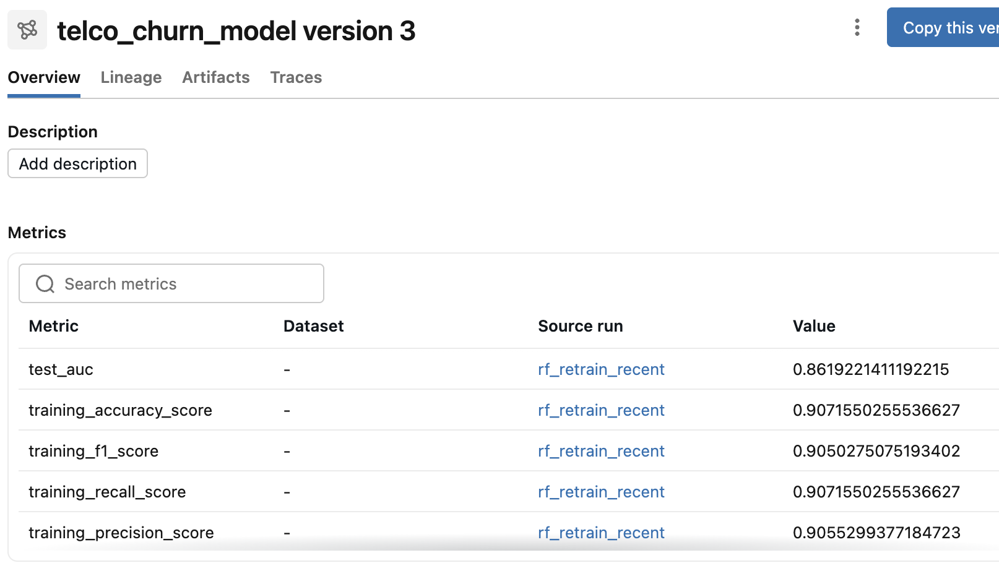
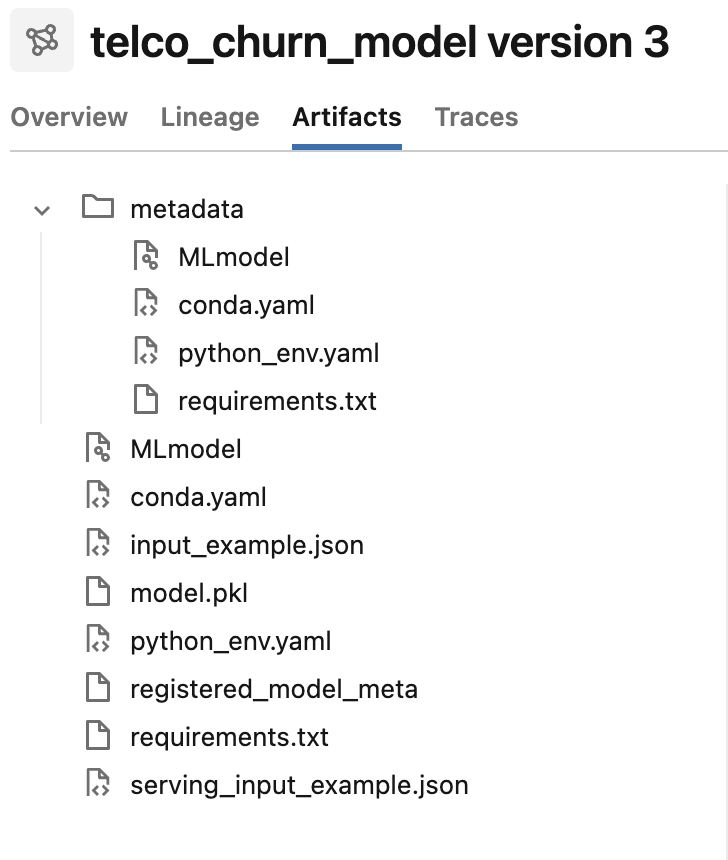
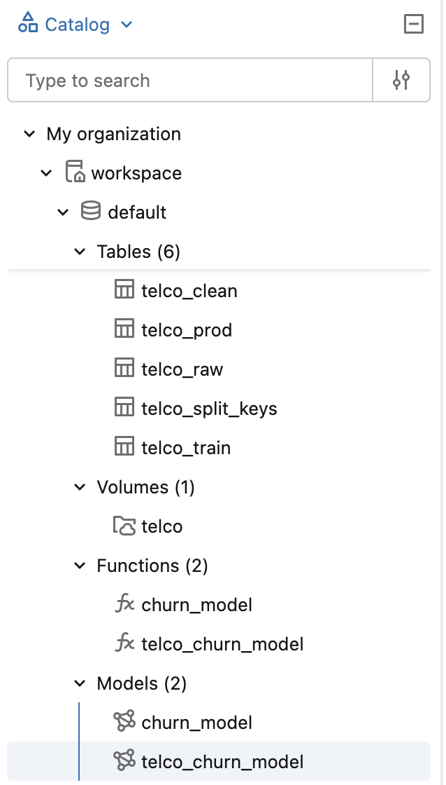

Ana Maria Lopez · Sharon Camacho
# 1. Definir el modelo model = RandomForestClassifier(n_estimators=100, max_depth=8) # 2. Entrenar model.fit(X_train, y_train) # 3. Medir roc_auc_score(y_test, model.predict_proba(X_test)[:, 1]) # 0.86
El resto del trabajo no aparece en este código.
clientes de una telco
canceló el servicio
variables disponibles antes de que cancelen
Dataset: Telco Customer Churn (IBM), publicado en Kaggle. Retención usa el ranking de riesgo para decidir a quién contactar primero.
Cada run guarda parámetros, métricas, la tabla de entrada y el modelo.
Versiones del modelo en Unity Catalog, con alias como @champion.
AUC y PSI por semana, registrados como métricas de un run.
mlflow.sklearn.autolog(log_models=False) with mlflow.start_run(run_name="rf_baseline"): mlflow.log_input(dataset, context="training") model.fit(X_train, y_train) mlflow.log_metric("test_auc", auc) mlflow.sklearn.log_model( model, name="model", signature=sig)
Código simplificado del notebook 02.
autologPromover o volver atrás consiste en mover el alias. El código del consumidor no cambia.
churn_scoreEsa columna no existe cuando el cliente todavía no canceló. Se excluye, junto con churn_reason y cltv.
| Min | Dónde | Qué se muestra |
|---|---|---|
| Notebook 01 · carga de datos (3 min) | ||
| 0:00 | Catalog | Tablas telco_raw → telco_clean → telco_train / telco_prod y el Volume |
| 1:00 | Notebook 01 | Fuga de datos: AUC 0.94 con churn_score |
| 2:00 | Notebook 01 | DESCRIBE DETAIL telco_prod: liquid clustering por week |
| Notebook 02 · MLOps (9 min) | ||
| 3:00 | Paso 1 | Entrenar con autolog y log_input |
| 4:00 | Experiments | Comparar los 4 runs |
| 5:30 | Paso 3 | Registrar en Unity Catalog, alias @champion |
| 6:15 | Paso 4 | Promover una versión peor y hacer rollback |
| 7:15 | Paso 5 | Inferencia batch con @champion |
| 8:00 | Paso 6 | Gráfica de AUC y PSI, alerta, reentrenar, promover v3 |
| 11:00 | Models → v3 | Pestaña Lineage de la versión 3 |
Si algo falla: tecla B abre las capturas de respaldo.

Las semanas 4 a 6 incluyen un evento simulado: aumento de precios del 25 % y cambio de comportamiento en clientes de fibra.
monthly_charges cambióPSI de 1.2 en la semana 6, sin necesitar etiquetas. No detecta el cambio de comportamiento de los clientes de fibra.
Necesita etiquetas, que llegan con retraso. Refleja el efecto de cualquier cambio sobre el modelo.
Cada señal cubre lo que la otra no ve.
AUC sobre la semana 6: champion anterior vs. modelo reentrenado con las semanas 4 y 5.
Regla de promoción: el nuevo modelo debe superar al champion por más de 0.02 de AUC.

@champion.La versión 3 muestra, aguas arriba, la tabla telco_recent y el notebook 02_mlops_telco.
Unity Catalog guarda la relación porque MLflow registra la tabla con log_input.



Cada versión guarda sus métricas, el run que la produjo y los archivos para recrear el entorno.
Jobs programados para monitoreo y reentrenamiento.
Databricks Asset Bundles y entornos de desarrollo, staging y producción.
Endpoint de inferencia en tiempo real.
La demo cubre el ciclo de vida del modelo. En Databricks Free Edition el cómputo es serverless, con cuotas diarias y funciones limitadas.
Notebooks, datos y código: github.com/SharonCamacho/MLOps_Databricks_MLFlow

workspace.defaultTablas telco_raw, telco_clean, telco_split_keys, telco_train, telco_prod; el Volume telco; y el modelo telco_churn_model.
telco_churn_modelLa versión 2 es el modelo de menor rendimiento usado en el rollback. La versión 3 es el modelo reentrenado.